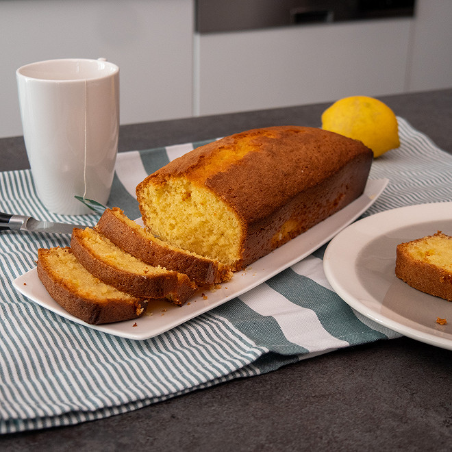

Recepten voor het ideeal 4 uurtje

Ingredienten
- 200 gram zelfrijzend bakmeel
- 1 zakje vanillesuiker
- 200 gram suiker
- 200 gram boter
- 4 eieren
Bereiding
-
Strijk de cakevorm in met gesmolten boter en bestuif hem met bloem.
-
Klop de eieren met de suiker en de vanillesuiker schuimig, smelt de
boter en voeg deze erbij. Zeef het zelfrijzend bakmeel en spatel het in
porties onder het beslag.
-
Vul de bakvorm voor 3/4e met het beslag en zet hem vervolgens 30 à 35
minuten in een voorverwarmde oven op 180 graden.